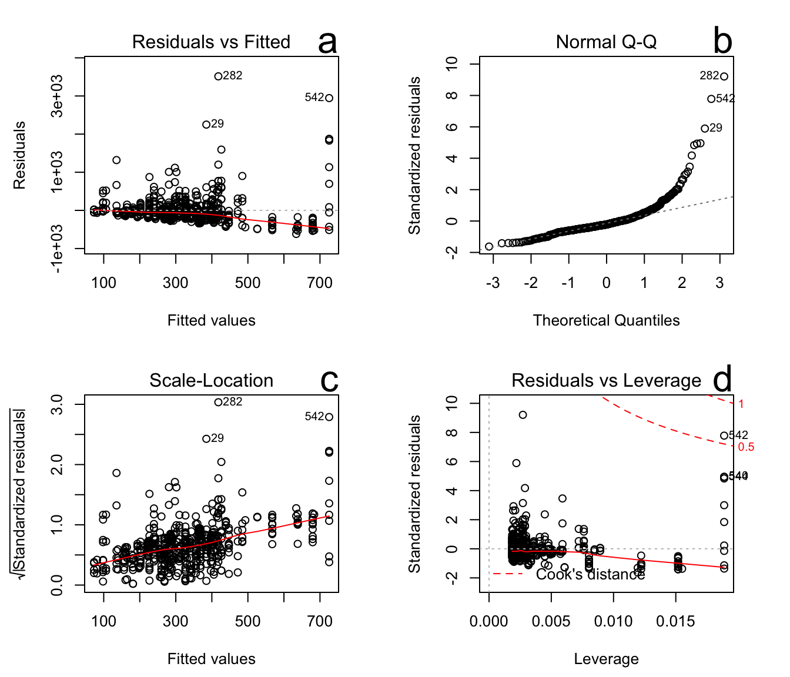

4 Linear regression
4.0.1 Introduction
A linear model is used when you want to test a prediction of correlation between an independent (or predictor) variable and a dependent (or response) variable (Phillips, 2018). For example, for our Hamilton Harbour data, we will be testing for a correlation between water level (our independent variable) and total zooplankton (our dependent variable) counted in the net grab.
4.0.2 Linear regression using water level and total zooplankton
In R, you can run a linear regression by using the lm() function. Your variables are entered in using the following formula..
nameoflinearreg<-lm(dependent variable~independent variable, yourdata)
4.0.2.1 Try it now
# A tibble: 0 × 109
# … with 109 variables: waterbody <chr>, area_group <chr>, Latitude <dbl>,
# Longtitude <dbl>, Station_Acronym <chr>, report_Stn <chr>,
# SamplingDate <dttm>, season <dbl>, year <dbl>, Julian_Day <dbl>,
# Julian_Week <dbl>, Month <dbl>, Station_depth <dbl>, water level <dbl>,
# Ammonia_ECCC1m <dbl>, DIC_ECCC1m <dbl>, DOC_ECCC1m <dbl>, POC_ECCC1m <dbl>,
# Chl_ECCC1m <dbl>, Chl Cor_ECCC1m <dbl>, NO2_NO3_ECCC1m <dbl>,
# PON_ECCC1m <dbl>, TKN dissolved_ECCC1m <dbl>, SRP_ECCC1m <dbl>, …
Call:
lm(formula = (log(total.zoop)) ~ (waterlevel), data = ham)
Residuals:
Min 1Q Median 3Q Max
-3.2956 -0.5544 0.0734 0.6626 2.7438
Coefficients:
Estimate Std. Error t value Pr(>|t|)
(Intercept) -73.9205 10.0626 -7.346 7.63e-13 ***
waterlevel 1.0570 0.1342 7.873 1.92e-14 ***
---
Signif. codes: 0 '***' 0.001 '**' 0.01 '*' 0.05 '.' 0.1 ' ' 1
Residual standard error: 0.9822 on 537 degrees of freedom
(203 observations deleted due to missingness)
Multiple R-squared: 0.1035, Adjusted R-squared: 0.1018
F-statistic: 61.99 on 1 and 537 DF, p-value: 1.92e-144.0.3 What does the summary output tell us about the relationship between water level and total zooplankton?
Talk amongst yourselves…
4.0.4 What are the assumptions of a linear regression?
- There is a linear relationship between the independent and dependent variable (Statistics solutions, 2024).
- The residuals are normally distributed (Statistics solutions, 2024).
- The variance of the residuals should be consistent across all the values of the independent variable (Statistics solutions, 2024).
- Each observation is independent of one another (there is no significant correlation between the independent variable values) (Statistics solutions, 2024).
4.0.5 How do you evaluate the assumptions of a linear regression?
You can evaluate the assumptions of a linear regression by creating diagnostic plots. These look at the residuals of the linear regression, that were shown using the summary() function above, to determine if the linear model is appropriate for the data (the data does not violate any assumptions) (Statistics solutions, 2024). This will create 4 diagnostic plots: residuals versus leverage, scale-location, Q-Q residuals and residuals versus fitted values.
4.0.5.1 Try it now
# divide the window into a 2 by 2 grid
par(mfrow = c(2, 2))
# plotting diagnostic plots with log transformed data
lab = c("a", "b", "c", "d")
for (i in 1:4) {
plot(logwaterlzoo.lm, which = i)
mtext(text = lab[i], side = 3, cex = 2, adj = 1)
}4.0.5.2 a.
The residuals versus fitted plot determines if the residuals exhibit non-linear behaviour (Statistics solutions, 2024). If the red line roughly follows the horizontal line on the plot, the residuals are showing linear behaviour (Statistics solutions, 2024).
4.0.5.3 b.
The Q-Q plot evaluates our second assumption; the residuals are normally distributed (Statistics solutions, 2024). If the points on the plot follow the diagonal line, then the residuals are normally distributed (Statistics solutions, 2024).
4.0.5.4 c.
The Scale-Location plot is used to determine our third assumption; the variance of the residuals should be consistent across all the values The the independent variable (Statistics solutions, 2024). This is also called homoscedasticity (Bobbitt, 2021).
4.0.5.5 d.
The Residuals versus Leverage plot displays any influential points in the dataset compared to Cook’s distance (Bobbitt, 2021). Ideally, the points should fall close to the ‘0’ line on the plot with little variation. Any points that fall past the line indicating Cook’s distance are considered strongly influential points (Bobbitt, 2021).
4.0.6 In the case of this linear regression between water level and total zooplankton, what do the diagnostic plots tell us?
Talk amongst yourselves…
4.0.7 How can we plot this linear regression?
You can plot the data using the plot() function, superimpose the regression line using the abline() function, calculate confidence intervals using the predict() function and add them to the plot using the lines() function.
4.0.7.1 Try it now
hogwaterl <- (ham$waterlevel)
# taking the natural log of the response variable
logtotal.zoop <- log(ham$total.zoop)
logwaterlzoo.lm = lm(logtotal.zoop ~ hogwaterl)
# creating a vector 'x' to predict total.zoop from waterlevel
x <- seq(min(hogwaterl, na.rm = TRUE), max(hogwaterl, na.rm = TRUE),
by = 0.05)
# calculate confidence intervals (confidence level 95%) for
# predicted total.zoop values
confidenceint <- predict(logwaterlzoo.lm, newdata = data.frame(hogwaterl = x),
interval = "confidence", level = 0.95)
cf = as.data.frame(confidenceint)
# create a plot with water level and total zooplankton use
# xlab(), ylab() and main() to put titles on the plot
plot(x = ham$waterlevel, y = logtotal.zoop, xlab = "Water level (m)",
ylab = "(log) Total zooplankton", main = "Relationship between water level and total zooplankton")
# add regression line to the plot using the abline() function
abline(logwaterlzoo.lm, col = "red")
# lower bound confidence interval
lines(x = x, cf$lwr, col = "blue", lty = 3)
# upper bound confidence interval
lines(x = x, cf$upr, col = "blue", lty = 3)
In this case, water level appears to have a positive correlation with total zooplankton. As the water level increases, the number of total zooplankton also increases.
4.0.8 Common mistakes
- Be careful when coding a linear regression using the lm() function that the independent and dependent variables are coded in the right order. i.e. lm(dependent variable~independent variable, data = yourdata).
4.0.9 References and resources
Assumptions of multiple linear regression analysis. Statistics Solutions. (2024, April 17). https://www.statisticssolutions.com/free-resources/directory-of-statistical-analyses/assumptions-of-linear-regression/
Bobbitt, Z. (2021, July 23). How to interpret diagnostic plots in R. Statology. https://www.statology.org/diagnostic-plots-in-r/
Phillips, N. D. (2018, January 22). Yarrr! The Pirate’s Guide to R. YaRrr! The Pirate’s Guide to R. https://bookdown.org/ndphillips/YaRrr/ * Check out chapter 15 on linear regression analysis
4.0.10 Alternative resource:
Another way to evaluate the assumptions of a linear regression is to compare fitted values (theoretical values of the dependent variable that are predicted by the model, assuming linearity) and the observed values of the dependent variable in a plot (Phillips, 2018). If the model fitted values forms a diagonal line with the observed values of the dependent variable, then the linear model fits the data well, and the assumptions of the linear model are met (Phillips, 2018). See Phillips resource for more details and sample coding.